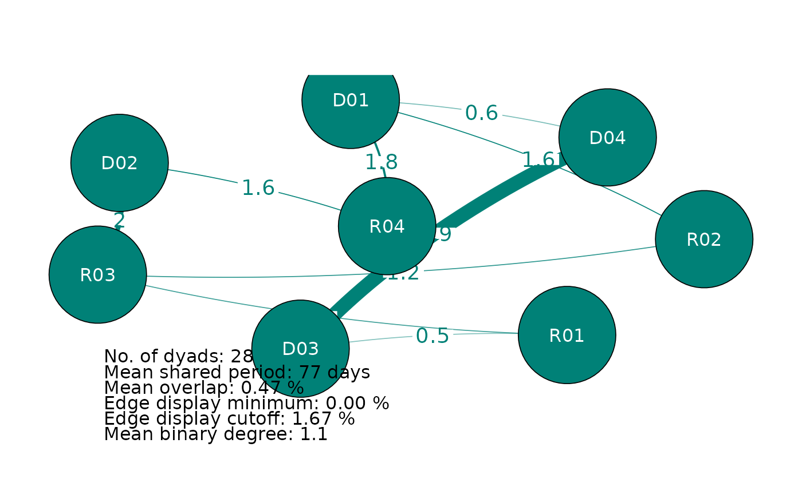
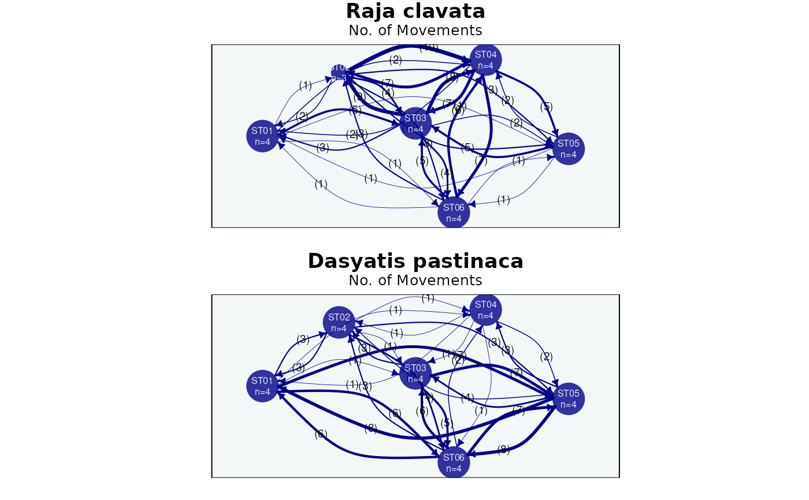

S3 plot method for mobyNetwork objects. For an "association"
network it draws the individual co-occurrence/association network (delegating to
plotAssociations). For a "movement" network it draws the directed transition
network between locations over a map (delegating to plotMovements), placing nodes
at their geographic coordinates when available.
Usage
# S3 method for class 'mobyNetwork'
plot(x, ...)Arguments
- x
A
mobyNetworkobject.- ...
Further arguments passed to the underlying plotting routine:
plotAssociationsfor association networks (e.g.color.by,nodes.size,edge.color) orplotMovementsfor movement networks (e.g.land.shape,epsg.code,background.layer,edge.metric,repel.nodes).
Examples
data(rays)
# association network (individual co-occurrences)
wide <- createWideTable(rays, value.col = "station")
#> Warning: - 'id.col' converted to factor.
#> Warning: 3 (ID, time-bin) combination(s) had multiple differing values; the first was kept. Aggregate upstream (e.g. calculateCOAs) to control this.
#> Tied (ID, time-bin) instances (first value kept):
#> timebin ID ties
#> 1898 2023-06-14 11:00:00 D03 ST01 (1) | ST06 (1)
#> 2163 2023-04-24 05:00:00 D04 ST01 (4) | ST05 (4)
#> 5302 2023-06-25 16:00:00 R04 ST03 (1) | ST05 (1)
assoc <- calculateAssociations(wide)
#> Calculating overlap - complete monitoring duration
#> Total execution time: 0.03 secs
if (requireNamespace("qgraph", quietly = TRUE)) {
plot(assoc)
}
#>
#> Association network
#> ------------------------------------------------------
#> Individuals: 8
#> Comparisons: All
#> Metric: association index
#> Total dyads: 28
#> Shows: network
#> ------------------------------------------------------

# movement network (transitions between locations)
trans <- calculateTransitions(rays, spatial.col = "station")
#> Warning: - 'id.col' converted to factor.
#> - Segmenting residence events with max.gap = 48 hours; tune/justify per system (Inf = split on location change only).
plot(trans)
#>
#> Movement network
#> ------------------------------------------------------
#> Nodes / edges: 6 sites, 58 edges
#> Groups: 2
#> Edge metric: movements
#> Projection: force-directed (no map)
#> ------------------------------------------------------
